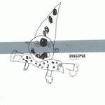

| Artist: | Damian Wilson |
| Title: | Disciple - Grow Old With Me |
| Label: | Cosmas Records |
| Length(s): | 35+19 minutes |
| Year(s) of release: | 2001 |
| Month of review: | [04/2004] |
| 1) | Disciple | 5.01 |
| 2) | Brightest Way | 3.18 |
| 3) | Heavenly Mine | 3.07 |
| 4) | Beating Inside | 5.02 |
| 5) | What A Man Can Dream | 3.03 |
| 6) | Never Close The Door | 2.51 |
| 7) | Nothing Without You | 2.34 |
| 8) | Part Of Me | 3.43 |
| 9) | Adam's Child | 3.21 |
| 10) | Quietly Spoken | 2.45 |
Disc 2:
| 1) | Grow Old With Me | 3.31 |
| 2) | In A Word | 3.07 |
| 3) | Just The Way It Goes | 4.30 |
| 4) | A Monday Night In March | 4.07 |
| 5) | Nothing Left In Me | 4.10 |
Disciple opens the album, and sets the tone for the album: clear, honest and melodic even a bit romantic. Instruments used are the acoustic guitar and because a real orchestra is used, some real strings. Brightest Way is more up-beat, again strongly melodic with a memorable good chorus, piano, and plenty of organ in the back. Heavenly Mine is a bit on the folky side with merry runs of piano and optimistic, quick strumming on guitar.
Beating Inside is slow again, mostly vocals plus bit of acoustic guitar with a rather distinctive dreamy ending: Fender Rhodes, drums restful and modern, a bit bleepy in a way. What A Man Can Dream means back to the orchestral strings, singer-songwriter lullabye with as often happens, a melancholic feel.
Never Close The Door has intimate vocals with very personal lyrics. Nothing Without You opens in the same fashion, but gets waltzy later on, and even has a latin interlude. Then we get more power as the music crescends; it would have been nicer I think if the crescendo would have been held a little longer.
Part Of Me is one of the most emotional tracks. Again, Damian opens his heart as he tells of the some of the worst moments in his life. The song itself, like most of the softer toned songs has some the feel of a lullabye, as if they ought to be sung to his children and not to us.
Adam's Child is more peaceful, pastoral, with nice clear piano ringing out and a bit of folky flute. The album closes with the acoustic ballad Quietly Spoken.
Disc 2 Grow Old With Me is a cover of a song by John Lennon. A song Damian always wanted to cover, but it is a bit too sugary. I prefer Damian's own songs. The song is sung in duet with a woman, whose name I could not find anywhere.
In A Word is more orchestral than most, with a distinctive vocal melody. Just The Way It Goes is a song from Cosmas, and in fact one of the best songs on that album (with only surpassing it in my opinion). It seems this version is somewhat less emotional, more subdued. A Monday Night In March is also from Cosmas, and also one of the better ones on that album. It does seem to me that the previous two tracks are more overtly melodic than most of the other tracks. Nothing Left In Me concludes the single. It is a melancholic song with a very good vocal melody.